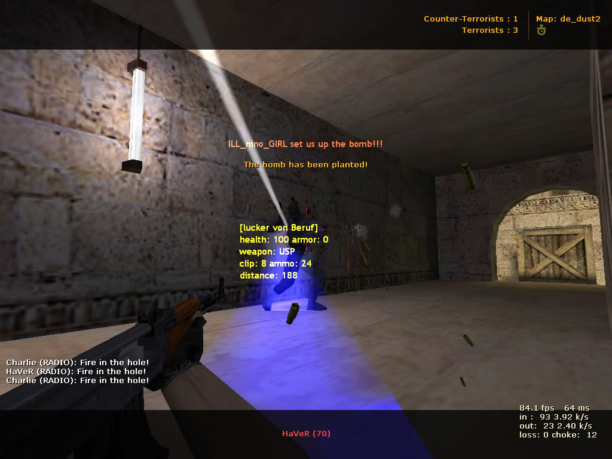
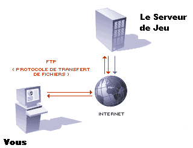
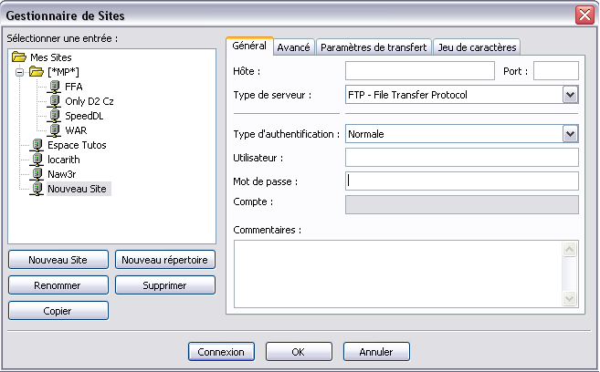
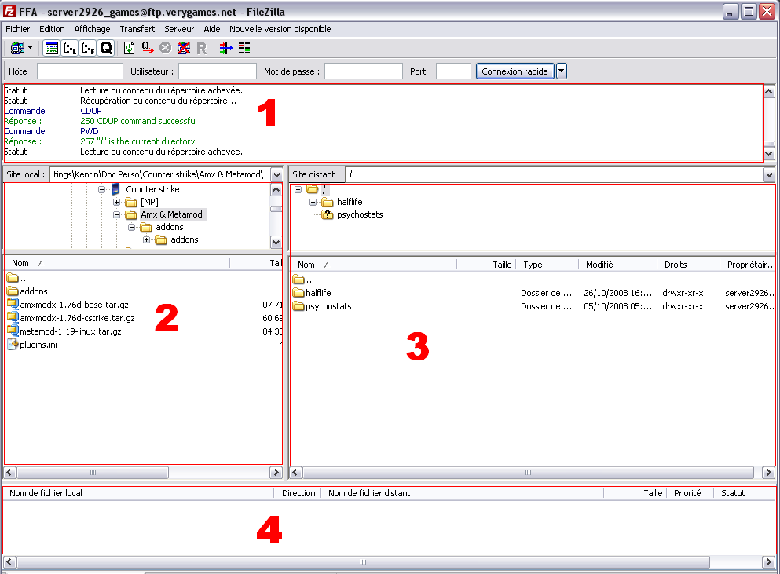
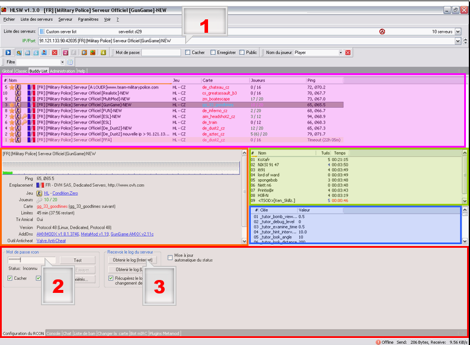

Vous souhaitez louer votre propre serveur de jeu, mais vous avez peur de le configurer ? Alors ce tuto est pour vous. :D
Tout au long de ce cours, je vais essayer de vous apprendre à configurer & paramétrer un serveur de type HL1 (Counter Strike 1.6, Condition Zero, Day of Defeat). Aucune connaissance n'est requise pour poursuivre la lecture, alors au boulot !
Ce tutoriel s'adresse essentiellement aux personnes propriétaires d'un serveur de jeu (moteur HL1) Counter Strike, Condition Zero ou Day Of Defeat, et qui veulent apprendre à le configurer de A à Z ! Pour passer au chapitre suivant (Metamod), vous devez donc :
soit être propriétaire d'un serveur de jeu de type HL1 hébergé (vous payez chaque mois X euros) chez un hébergeur (tel que Verygames, MondialServers, NitroServ... la liste est encore très longue !) ;
soit être propriétaire d'un serveur hébergé sur votre propre PC (le temps d'une LAN par exemple, à moins que vous ayez un "monstre de PC") ;
soit être propriétaire d'un serveur que vous hébergez vous-mêmes à l'aide d'un serveur dédié (dans ce cas-là, en principe, si vous hébergez votre ou vos propre(s) serveur(s), je pense que vous savez déjà les configurer !).
Si vous n'avez pas encore de serveur, il n'est pas trop tard !
Vous pouvez suivre le super tuto de Meuhcoin pour apprendre à créer un serveur de jeu gratuitement ! Lien :)
Si votre ordinateur ne dispose pas des moyens d'héberger votre serveur de jeu (ce qui est, j'en suis presque sûr, votre cas - eh oui, les hébergeurs de serveurs de jeu ne sont pas là pour rien :lol: ), alors suivez ce qui suit.
Vous avez bien dit "L'hébergeur va donc installer votre serveur..." ?
Laissez-moi finir ! Oui, l'hébergeur installe votre serveur. Pour quoi alors installer "AMX" ? Patience, vous verrez plus tard pourquoi.
Revenons à notre problème : vous n'avez pas de serveur de jeu. :(
Pour ce faire, vous devez donc en louer un. Plus le nombre de places maximum (= slots) de votre serveur de jeux est grand, plus le prix est élevé. (Bah oui, plus le nombre de places maximum de votre serveur est important, et plus votre serveur de jeu va utiliser de ressources sur le serveur...)
Pour un très bon rapport qualité / prix / support, je vous propose MondialServers. Après, Google est votre ami, c'est à vous de voir en fonction de votre budget et de vos besoins...
Bien : à présent, vous avez donc un serveur de jeu (moteur HL1).
Vous pouvez désormais vous y connecter et jouer ! :D Et si maintenant, un méchant joueur rejoint le serveur, et que l'envie vous prend de l'expulser (le "kicker") ?
C'est tout bête voyons, il suffit d'ouvrir la console, et de taper les commandes ci-dessous :
Les 2 premières lignes permettent de s'identifier. La 3e ligne permet d'expulser le joueur.
Citation : Exemple
rcon_port 27015 rcon_password "siteduzero_serveur8_naw3r" rcon kick "[Le site du zero] Naw3r"
Voilà, c'est fait.
Et si maintenant vous décidez d'expulser 17 joueurs du serveur ?
Alors il faudra rentrer 17 fois la dernière ligne, en mettant à chaque fois le pseudo du joueur à kicker (après s'être identifié, bien sûr).
Non, il faut reconnaitre que ce n'est pas ce qu'il y a de plus simple. :lol:
Avec AMX, il vous suffit de presser une touche de votre clavier et un petit menu d'administration apparaît : vous pouvez kicker, bannir, slaper... les joueurs ou encore faire un "restart", modifier les principaux paramètres... plus besoin de s'identifier à chaque fois, plus besoin d'ouvrir la console systématiquement...
AMX, c'est la façon la plus simple de gérer votre serveur.
Nous pouvons à présent attaquer la partie installation.
Certes, on pourrait se demander pourquoi diable je consacre un chapitre à "Metamod", alors que je vous parle depuis le début de AMX.
Metamod est en quelque sorte un mode de Half-Life, qui va interpréter les données du jeu afin de modifier le jeu proprement dit. Et c'est là tout l'intérêt : vous allez pouvoir par exemple installer des plugins de ce fameux Metamod tel que AMX, clanmod....
Retenez une chose : sans Metamod, l'installation de AMX est impossible.
En fait, Metamod est indispensable pour l'installation de AMX, mais une fois installé, il ne nous servira plus à rien ! C'est d'ailleurs la raison pour laquelle je n'en parle que dans ce chapitre.
Bon, maintenant que vous connaissez la raison pour laquelle il faut disposer de Metamod, passons à son installation !
Pour l'installer, c'est mieux de l'avoir, non ? (Quelle question ! :lol: )
Oui, mais il existe plusieurs versions de Metamod. En effet, votre serveur de jeu peut être installé sous Linux, ou sous Windows. Et encore, il y a 2 versions pour Linux...
Si vous avez la réponse, tant mieux, sinon...
Dans la majorité des cas, je pense que vous louez votre serveur chez un hébergeur (tel que Verygames, MondialServer)... dans ce cas-là, il vous faut Metamod pour Linux.
Il se peut que vous hébergiez vous-mêmes votre serveur, sur votre ordinateur avec comme système d'exploitation Windows, dans ce cas-là il vous faut Metmod pour Windows.
Une fois votr .zip contenant Metamod téléchargé, décompressez-le (dans votre dossier Metamod ;) ). En fait, le .zip ne contient qu'un fichier DLL intiulé metamod_i386.so pour Linux et metamod.dll pour Windows. Ne vous inquiétez pas, c'est bien ça !
Il va falloir ensuite se connecter au FTP de votre serveur de jeu afin de transférer le ficher Metamod.
Pour installer Metamod, connectez-vous au FTP de votre serveur de jeu.
Pour DOD (Day of Defeat), créez un dossier addons dans le dossier dod, puis un dossier metamod (dans le dossier addons) et pour finir un dossier dlls (dans le dossier metamod). Transférez-y le fichier DLL (Metamod pour Windows ou SO - Metamod pour Linux) que nous venons de télécharger.
Pour CS (Counter Strike 1.6), créez un dossier addons dans le dossier strike, puis un dossier metamod (dans le dossier addons) et pour finir un dossier dlls (dans le dossier metamod). Transférez-y le fichier DLL (Metamod pour Windows ou SO - Metamod pour Linux) que nous venons de télécharger.
Pour CZ (Condition Zero), créez un dossier addons dans le dossier czero, puis un dossier metamod (dans le dossier addons) et pour finir un dossier dlls (dans le dossier metamod). Transférez-y le fichier DLL (Metamod pour Windows ou SO - Metamod pour Linux) que nous venons de télécharger.
Déclaration de Metamod
Maintenant que Metamod est installé, il nous reste juste à le déclarer et ce sera fini !
Pour cela, on doit modifier le fichier liblist.gam. Téléchargez-le sur votre ordinateur puis :
Enregistrez, fermez et transférez à nouveau le fichier, en écrasant le fichier d'origine pour ainsi appliquer les modifications.
Si vous avez bien fait comme moi, Metamod est désormais installé ! :lol:
Voilà, Metamod est enfin installé ! Ouf ! Ce n'était quand même pas trop difficile, il suffisait de suivre ! Maintenant, nous allons passer à l'installation d'AMX (eh oui, encore une installation ; c'est la dernière :p ).
AMX, c'est quoi ? Alors pour commencer, j'en ai déjà parlé dans le premier chapitre. AMX simplifie la gestion de votre serveur. (Reportez-vous à ce chapitre.)
AMX, c'est quoi ?
Tout d'abord, sachez qu'il existe "2 AMX"(je n'emploie pas le terme version, vous verrez pourquoi plus tard...).
AMX Mod (AMX) est un plugin de Metamod. Il va simplifier la gestion de votre serveur, et apporter de nouvelles fonctionnalités (Slay, Slap...). Fini les lignes tordues de commandes à rentrer dans la console. Mais ce n'est pas tout, vous pourrez ensuite installer des plugins AMX, et là, quasiment tout est possible (Flash colorés, skins personnalisés... ce sont des exemples de plugins, mais il en existe des centaines). Cependant, AMX Mod est une communauté "morte", il n'y a plus de réels développeurs, plus ou presque plus de support officiel. La seule raison que AMX soit encore utilisé est qu'il soit traduit intégralement en francais.
AMX Mod X (AMXX), est un plugin de Metamod. Il va simplifier la gestion de votre serveur, et apporter de nouvelles fonctionnalités (Slay, Slap...). Fini les lignes tordues de commandes à rentrer dans la console. Mais ce n'est pas tout, vous pourrez ensuite installer des plugins AMX, et là, quasiment tout est possible (Flash colorés, skins personnalisés... ce sont des exemples de plugins, mais il en existe des centaines, encore plus qu'avec AMX Mod). Le point positif par rapport à AMX Mod, c'est que AMX Mod X est sans cesse en cours de développement, des versions sortent régulièrement, les plugins sont mis à jour, il y a un réel support actif... etc. AMX Mod X est une communauté vivante.
En bref, AMX Mod X a de l'avenir, ce qui n'est pas le cas d'AMX Mod.
Vous l'aurez compris, nous allons donc installer AMX Mod X.
(C'est pour cela que je parlerai tout le temps de AMX et non de AMXX, bien que ce soit pareil...)
Bien, nous allons maintenant télécharger AMX Mod X !
Informations
Cela fonctionne exactement comme pour Metamod. (Il existe un "AMX" pour Linux, un autre pour Windows - et un dernier pour Linux amd 68.)
Ensuite, étant donné que AMX (AMX Mod X) est une communauté active, et que des développeurs travaillent dessus, il sort régulièrement de nouvelles versions. La dernière est la 1.8.X.
Ensuite, nous téléchargerons l'"addon" correspondant à votre jeu. (Fichiers supplémentaires pour AMX en fonction du jeu : Counter strike, Day of defeat...)
<information>Vous devriez normalement avoir téléchargé AMX Mod X et l'addon qui correspond à la version de AMX téléchargée et au jeu installé sur votre serveur de jeu !
Dézippez ces deux dossiers sur votre ordinateur, dans 2 dossiers différents ("AMX Mod X v*.*" et "AMX Mod X ***** addon").
Voilà, passons maintenant à l'installation de AMX Mod X !
Nous allons maintenant installer AMX Mod X sur votre serveur de jeu. Comme pour Metamod, nous allons transférer les fichiers du plugin, puis déclarer ce dernier.
Transfert des Fichiers
1. AMX Mod X
Que ce soit la version 1.8.1 ou 1.76 d d'AMX, il faut placer les fichiers dans le même dossier. Ouf. :lol: Vous remarquez (une fois le dossier dézippé) que tous les fichiers de AMX Mod X sont déjà dans un dossier nommé "addons" (qui lui-même est divisé en sous-dossiers).
Il vous suffit de vous connecter au FTP de votre serveur, et de transférer tout le dossier addons dans :
pour DOD (Day of Defeat), dans le dossier dod ;
pour CS (Counter Strike 1.6), dans le dossier cstrike ;
pour CZ (Condition Zero), dans le dossier czero.
2. Les "addons"
Comme vous avez pu le constater aussi, tout est déjà dans un dossier addonsaddons. Connectez-vous au FTP de votre serveur, et transférez tout le dossier addons en remplaçant les fichiers existants portant le même nom : (la version d'AMX Mod X utilisée ne change rien)
pour DOD (Day of Defeat), dans le dossier dod ;
pour CS (Counter Strike 1.6), dans le dossier cstrike ;
Pour CZ (Condition Zero), dans le dossier czero.
Voilà, il ne nous reste plus qu'à déclarer AMX Mod X.
Déclaration d'AMX Mod X
Rappelez-vous, AMX Mod X est un plugin de Metamod.
À votre avis, où doit-on déclarer AMX Mod X ?
Bah oui, c'est logique voyons, dans le dossier "metamod" ! Nous devons créer un fichier plugins.ini et le placer dans le dossier "metamod".
Pour remédier à ce petit problème, c'est simple !
Allez dans Poste de Travail, puis dans Outils et enfin dans Options des dossiers...
Allez dans l'onglet Affichage de la fenêtre qui vient de s'ouvrir.
Décochez la case Masquer les extensions des fichiers dont le type est connu.
Voilà : créez maintenant un nouveau Document texte et nommez-le plugins.ini. Faites "Entrée". Windows va vous demander si vous souhaitez vraiment modifier l'extension du fichier, choisissez "Oui".
Bon ! Maintenant que nous avons ce fichier, il faut le remplir ! Ce ne sera pas long, il n'y a qu'une ligne à mettre ! :p
1. Pour Windows
Ouvrez le fichier et inscrivez la ligne suivante :
Citation : plugins.ini
win32 addons\amxmodx\dlls\amxmodx_mm.dll
Enregistrez et fermez le fichier.
2. Pour Linux
Ouvrez le fichier et inscrivez la ligne suivante :
Citation : plugins.ini
linux addons/amxmodx/dlls/amxmodx_mm_i386.so
Enregistrez et fermez le fichier.
Voilà, vous n'avez plus qu'à transférer le fichier plugins.ini :
pour DOD (Day of Defeat), dans le dossier dod/addons/addons/metamod ;
pour CS (Counter Strike 1.6), dans le dossier cstrike/addons/metamod ;
pour CZ (Condition Zero), dans le dossier czero/addons/metamod.
À présent, AMX Mod X est en principe installé, si vous avez bien suivi ! C'est ce que nous allons vérifier.
Finialisation & vérification de l'installation
Pour terminer l'installation, nous allons devoir relancer (rebooter) votre serveur de jeu.
Ouvrez le logiciel HLSW, connectez-vous au serveur (Obtenir le log), allez dans l'onglet Console et tapez :
Citation : console
exit
Votre serveur va être en "Time-out" pendant quelques secondes puis il va redémarrer. Une fois redémarré, tapez ceci dans la console :
Citation : console
meta list
Vous devriez voir apparaitre ceci (dans la console) :
Citation : console
Currently loaded plugins: description stat pend file vers src load unlod [ 1] AMX Mod X RUN - amxmodx_mm_i386. v1.76d ini ANY ANY [ 2] Fun RUN - fun_amxx_i386.so v1.76 pl1 ANY ANY [ 3] CStrike RUN - cstrike_amxx_i38 v1.76 pl1 ANY ANY [ 4] CSX RUN - csx_amxx_i386.so v1.76c pl1 ANY ANY
4 plugins, 4 running
Si c'est le cas, vous avez le droit de passer au chapitre suivant. Sinon, c'est que vous avez fait une erreur... relisez cette page.
amx_addban <authid or ip> <minutes> [reason] Permet de bannir un joueur Exemple : amx_addban "STEAM_ID X:X:XXXXXXX" "60" "insulte"
amx_addmetk En utilisant cette commande, vous pourrez vous punir vous-mêmes amx_ban <name or #userid> <minutes> [reason] Permet de bannir un joueur par son nom ou son STEAM_ID Exemple : amx_ban military 60 "pas gentil"
amx_banip <name or #userid> <minutes> [reason] Permet de bannir un joueur par son adresse ip Exemple : amx_banip military 60 "méchant"
amx_banmenu Permet d'afficher le menu de ban
amx_kick <name or #userid> [reason] Permet de kicker un joueur Exemple : amx_kick "military" "trop fort"
amx_kickmenu Permet d'afficher le menu de kick
amx_nick <name or #userid> <new nick> Permet de changer le pseudo d'un joueur Exemple : amx_nick "le_pseudo_du_joueur_à_changer" "le_pseudo_que_vous_lui_mettez" Soit : amx_nick "unnamed" "smiley" Le pseudo du joueur unnamed va devenir smiley
amx_leave <tag> [tag] [tag] [tag] Permet de déconnecter un joueur du serveur qui ne porte pas le tag spécifié
amx_reloadadmins Permet de recharger la liste des admins
amx_slap <name or #userid> [power] Permet de slapper (frapper) un joueur Exemple : amx_slap military 50 (cela enlèvera 50 hp à military)
amx_slapmenu Permet d'afficher le menu de slap
amx_slay <name or #userid> Permet de foudroyer un joueur (le tuer sans le kicker) Exemple : amx_slay military
amx_teammenu Permet d'afficher le menu de gestion d'équipe (pour transférer un joueur ct en terro ou inverse)
amx_teleportmenu Permet d'afficher le menu de téléportation d'un joueur
amx_unban <authid or ip> Permet de débannir un joueur Exemple : amx_unban "STEAM_ID X:X:XXXXXXXX"
amx_statscfg Permet d'afficher le menu pour la configuration des stats du jeu Utilisation : amx_statscfg <commande> [paramètres]... Commandes : - on <variable> - active l'option spécifiée ; - off <variable> - désactive l'option spécifiée ; - save - sauve la configuration des stats ; - load - charge la configuration des stats ; - list [id] - liste le status des stats ; - add <nom> <variable> - ajoute des stats à liste. Exemple : amx_statscfg on "nom_de_la_variable" (vous trouverez tous les noms des variables en tapant la commande amx_statscfgmenu)
amx_statscfgmenu Permet d'afficher le menu de configuration des stats
amx_chat <message> Permet d'envoyer un message aux admins Exemple : amx_chat je vous aime les admins
amx_csay <color> <message> Permet d'afficher un message centré de couleur à tous les joueurs Exemple : amx_csay "red" "toute insulte sera punie d'un ban!" Les différentes couleurs sont "Red Green Blue Cyan Magenta Yellow Orange Purple".
amx_psay <name or #userid> <message> Permet d'envoyer un message privé à un joueur Exemple : amx_psay "le_nom_du_joueur_à_qui_vous_souhaiter_envoyer_un_message" "votre phrase" Soit : amx_psay "cyber" "il est bien ton site ^^" amx_say <message> Permet d'envoyer un message à tous les joueurs
amx_tsay <color> <message> Permet d'afficher un message coloré à gauche sur l'écran de chaque joueur Exemple : amx_tsay yellow "bonsoir vous allez bien ?" Tous les joueurs du serveur verront ce message apparaître sur la gauche de leur écran
amxmodmenu Permet d'afficher les menus AMXX (kick ban cfg stats etc. etc.) amx_addadmin <playername|auth> <accessflags> [password] [authtype] Cette commande permet d'ajouter un admin Exemple : amx_addadmin «STEAM_ID_de_l_admin_à_ajouter» «abcdefghijklmnopqrstu» «» «ce» (pour savoir à quoi correspondent les différentes lettres, cliquez ici)
amx_cfgmenu Permet d'afficher le menu de configuration
amx_clcmdmenu Permet d'afficher le menu des commandes afin de slapper kicker (etc.) les joueurs
amx_cmdmenu Permet d'afficher le menu de commandes (pour faire un restart round, par exemple)
amx_cvar <cvar> [value] Permet d'éxécuter une cvar Exemple : amx_cvar "mp_timelimit" 30
amx_cvarmenu Permet d'afficher le menu des cvars
amx_help <page> [nr of cmds (only for server)] Permet d'afficher l'aide amx Pour utiliser l'aide, il vous suffit de taper "amx_help" dans votre console et de rechercher la commande souhaitée. ATTENTION !! Il y a plusieurs pages d'aide ; pour consulter la page suivante, tapez "amx_help 11", puis pour obtenir la suivante "amx_help 21" puis "amx_help 31" etc. etc.
amx_langmenu Permet d'afficher le menu de sélection de langue du serveur et de jeu
amx_map <mapname> Permet de lancer une map Exemple : amx_map de_dust2_cz
amx_mapmenu Permet d'afficher le menu de changement de map
amx_menu Permet d'afficher le menu client pour les joueurs sans droit d'admin
amx_off/on Permet de mettre ou d'enlever la pause des plugins lancés dans le jeu
amx_pause Permet de mettre ou d'enlever la pause pendant le jeu
amx_pausecfgmenu Permet de mettre ou d'enlever la pause d un plugin avec le menu
amx_pausecfg: Utilisation: amx_pausecfg <commande> [nom] Commandes : - off - met en pause tous les plugins qui ne sont pas dans la liste ; - on - enlève la pause de tous les plugins ; - stop <file> - arrête un plugin ; - pause <file> - met en pause un plugin ; - enable <file> - active un plugin ; - save - sauver la liste des plugins arrêtés ; - clear - effacer la liste des plugins arrêtés ; - list [id] - liste des plugins ; - add <title> - marquer un plugin comme impossible à mettre. Exemple : amx_pausecfg on
amx_rcon <command line> Permet d'envoyer une commande qui sera éxécutée à partir du RCON Exemple : amx_rcon say "bonjour tout le monde"
amx_reloadadmins Permet de recharger la liste des admins
amx_restmenu Permet d'afficher le menu de restriction des armes
amx_restrict Permet d'afficher l'aide pour la restriction des armes
amx_setlang <language> Permet de sélectionner la langue du jeu
amx_showrcon <command line> Permet d'envoyer une commande qui sera éxécutée à partir du RCON
amx_speechmenu Permet d'afficher le menu des voix / paroles du jeu
amx_teammenu Permet d'afficher le menu de gestion d'équipe (pour transférer un joueur ct en terro ou inverse
amx_teleportmenu Permet d'afficher le menu de téléportation d'un joueur
amx_who Permet de montrer les joueurs sur le serveur avec leur STEAM_ID et leurs droits d'admin
amx_vote <question> <answer#1> <answer#2> Permet de faire un vote sur le serveur Exemple : amx_vote "trouvez-vous que ce serveur est cool ?" "oui" "non"
amx_voteban <name or #userid> Permet de faire un vote pour bannir un joueur Exemple : amx_voteban military
amx_votekick <name or #userid> Permet de faire un vote pour kicker un joueur Exemple : amx_votekick military
amx_votemap <map> [map] [map] [map] Permet de faire un vote pour changer de map Exemple : amx_votemap "de_dust2_cz" "awp_map4" Vous pouvez mettre jusqu'à 4 maps différentes
amx_votemapmenu Permet d'afficher le menu de vote de map
Le server.cfg... Pour être un fichier principaux, c'en est un !
Quelques informations.
Il se situe dans le répertoire du jeu, à savoir cstrike, czero ou dod.
Il est lu par le serveur à chaque changement de map.
Il contient les cvars principales de votre serveur de jeu.
Il ne concerne pas les commandes amx.
Organisation du fichier
Lorsque vous louez un serveur, l'hébergeur a installé le jeu, et donc transféré un server.cfg. J'aime que les choses soient propres, claires & organisées : on ne balance pas des tas de cvars "à l'arrache" dans un fichier. C'est pour cela que je vais vous proposer d'organiser son server.cfg, ceci dans le but de s'y retrouver soi-même !
Citation : server.cfg
//////////////////////////////////////////////////// // Server.cfg - Fichier de configuration // // ---Pensez à commenter ce fichier ---/// /////////////////////////////////////////////////// // Configuration du serveur
rcon_password "siteduzero_rcon_secret" // rcon mot de passe hostname "Fr - Le site du Zéro - // nom du serveur sv_password "none" // password du serveur
Configuration principale mp_timelimit 30 // temps de la map en min mp_friendlyfire 1 // tirs sur les allies pris en compte mp_roundtime 4 // temps de chaque rounds en min mp_maxrounds 0 // rounds maximum etc.
//Configuration avancée mp_flashlight 1 // lampe torche mp_c4timer 35 // temps du c4 mp_falldamage 1 // degats lors d'une chute mp_footsteps 1 // activer sons des pas ... etc.
Ce qui est en italique, c'est le commentaire du fichier.
Ce qui est en gras, c'est l'architecture du fichier (et aussi le commentaire).
Ce qui n'est ni en italique, ni en gras, c'est le contenu du fichier.
Essayez au maximum de respecter ces critères, afin de garder un fichier propre.
Modifier le fichier
En fait il n'y a pas grand-chose à dire ! Si vous souhaitez ajouter une cvar, il suffit de taper sur votre clavier. Mais attention, il y a quelques règles à respecter :
une seule commande par ligne ;
une commande doit toujours avoir une valeur ;
si la valeur de la commande n'est pas un chiffre, il est préférable de la mettre entre guillemets.
Voilà : après, le server.cfg est un fichier propre à votre serveur, c'est à vous de le personnaliser en fonction du mode de jeu (FFA, FUN, WAR...) et de vos envies.
Quelques caractéristiques
Voici quelques explications.
Citation : server.cfg
hostname "Fr - Only D2 by Naw3r"
Définit le nom du serveur
Citation : server.cfg
rcon_password "siteduzero"
Définit le mot de passe RCON
Citation : server.cfg
sv_password "passe"
Définit le mot de passe du serveur. Mettre sv_password "" pour enlever le mot de passe.
Citation : server.cfg
bot_prefix [*MP*] bot_difficulty 2
Permet de modifier le préfixe des noms des bots ainsi que leur niveau.
IMPORTANT : Veuillez mettre ces lignes !<citation nom="servercfgfile "server.cfg""></citation>Permet de dire au serveur qu'il doit lire le server.cfg à chaque changement de map.
<lien url="Liste des commandes HL">http://damnes.com/hl/</lien>
Je vous donne un exemple type d'un server.cfg pour un serveur fun, bien que je pense que c'est à vous de construire votre fichier...
Citation : server.cfg
///////////////////////////////////////////////////////////////////////// // configuration de votre serveur - ce fichier s'exécute au démarrage // // du serveur, nous avons inséré une configuration optimale pour // // répondre à vos attentes. Pour une lecture lisible de ce // // fichier, une définition de chaque cvars se trouve // // en face de celle-ci. // /////////////////////////////////////////////////////////////////////////
//configuration serveur
rcon_password "passe_rcon" // rcon mot de passe hostname "[FR} - Serveur des zeros !" // nom du serveur sv_password "" // password du serveur
bot_prefix [ZeRo] bot_difficulty 2 //configuration generale
mp_timelimit 15 // temps de la map mp_friendlyfire 1 // tirs sur les copains pris en compte mp_roundtime 2 // temps de chaque round mp_maxrounds 0 // rounds maximum mp_buytime 30 // temps achats mp_freezetime 0 // blocage debut du round mp_autokick 0 // kicker les afk auto mp_autoteambalance 1 // equilibrage des equipes mp_hostagepenalty 0 // punir si otages tués mp_tkpunish 0 // puni si tk mp_mapvoteratio 0.6 // ratio pour les votes mp_forcechasecam 0 // voir ct ou terro etant mort mp_forcecamera 0 // blocage camera mp_playerid 0 // crosshair vision info sv_gravity 800 // gravite sur le serveur sv_alltalk 1 // micro pour tous off pausable 0 // utiliser la pause
// Configuration approfondie
mp_flashlight 0 // autoriser lampe torche mp_c4timer 35 // temps du c4 mp_falldamage 1 // degats lors d'une chute mp_footsteps 1 // activer sons des pas mp_winlimit 0 // round gagnants desactiver mp_timeleft 1 // affichage du temps restant mp_chattime 0 // temps attente entre 2 maps mp_fadetoblack 0 // ecran noir si mort sv_aim 0 // autoaim desactiver sv_maxspeed 320 // max client move speed sv_cheats 0 // interdit cheat sv_clipmode 0 // sv_clienttrace 1 // sv_voiceenable 1 // activer micro sv_voicecodec voice_speex // codec audio sv_voicequality 3 // qualite audio
allow_spectators 1 // accepter ou non spectateur servercfgfile "server.cfg" // lecture cfg lancement serveur
Le mapcycle.txt, qu'est-ce que ça peut être, selon vous ? Tout est dans le titre, les maps présentes dans ce fichier sont les maps par défaut qui vont tourner sur le serveur (le temps des maps est défini par la commande mp_timelimit).
Modification du fichier
Là non plus, rien de compliqué.
Il y a par contre quelques points à savoir :
une map par ligne ;
on ne met pas l'extension .bsp ;
l'ordre dans lequel sont inscrites les maps est l'ordre dans lequel les maps vont tourner.
Une petit exemple :
Citation : mapcycle.txt
de_dust de_nuke de_inferno de_train
Sur ce serveur, il y aura la map de_dust2 puis de_nuke..., à condition qu'il n'y ait pas de votemap (amx).
À quoi sert donc le mapcycle.txt si AMX est installé sur le serveur ?
C'est vrai que d'après mon explication, on pourrait penser que le mapcycle est inutile si AMX est installé. En fait, lorsque le serveur est vide, il n'y a donc pas de vote, c'est donc les maps du mapcycle qui tournent.
Le Motd, à quoi ce fichier pourrait nous servir... C'est sûr que le nom n'est pas très explicite !
Allez, je vous donne un indice : MOTD veut dire Message Of The Day. ... et même une petite illustration :
Voilà ! Vous l'avez compris, le motd.txt permet de modifier le message d'accueil du serveur.
Modification
Pour les webmasters, ça ne va pas poser de problèmes ! En effet, le contenu de ce fichier est du langage HTML (l'extension .txt porte à confusion mais c'est bien du HTML !).
Je vous invite donc à lire le super tutoriel de M@teo :D (la partie I).
Pour les flemmards, je suis gentil : voici un petit modèle (pris du Wiki VG) que vous pourrez modifier selon vos goûts :
N'oubliez pas les 4 règles : No Cheat / No Camp / No Rage / Only Fun
GL & HL !
</pre> </div></body></html>
Vous n'avez plus qu'à héberger - par exemple - un son et une musique et modifier :
l'URL en rouge par le chemin du son ;
l'URL en vert par le chemin de l'image ;
le texte en bleu par le texte de votre choix !
Évitez de mettre trop de CSS... il ne faut pas que la mise en page soit lourde, ça ferait bugger les joueurs. Rappelez-vous que c'est un message d'accueil (et non pas un site), inutile de faire une super page bourrée de CSS. ^^
Pour éviter ces deux problèmes, il suffit de faire une redirection vers une autre page. Pour ce faire, créez une page HTML (simple, avec une image légère si vous le souhaitez, les règles du serveur, un lien vers le site de la team et basta !) puis remplacez le code du MOTD par celui-ci (en remplaçant l'URL en gras par la vôtre !) :
Dans ce cas-là, il faut que j'uploade mon fichier html (par exemple motd.html) sur le répertoire de base de mon site (http://monsite.com) : le message d'accueil du serveur sera en fait le contenu de http://monsite.com/motd.html.
Pour simplifier, le fichier amxx.cfg , c'est le fichier server.cfg mais pour AMX.
Pourquoi ne pas tout regrouper dans un seul fichier ?
Eh bien pour déjà pour une question de "propreté" : chacun sa place ! Ensuite, si jamais un jour vous décidez de désinstaller AMX, eh bien ce sera plus simple : toutes les commandes du amxx.cfg ne serviront plus à rien, vous pourrez supprimer ce fichier...
Modification
C'est comme pour le server.cfg ; je ne vois rien d'autre à rajouter.
En revanche, je vais commenter le fichier amxx.cfg par défaut et vous expliquer certaines commandes spécifique d'amxx.
Citation : amxx.cfg
// Default value: "z" amx_default_access "z"
Permet de définir le flag par défaut assigné au joueur. (Vous comprendrez mieux lorsque vous aurez lu le chapitre sur le users.ini.) Ne modifiez jamais cette ligne, vous risqueriez de donner des droits d'administration à tous les joueurs !
Citation : amxx.cfg
// Show admins activity // 0 - disabled // 1 - show without admin name // 2 - show with name amx_show_activity 2
Cette commande vous permet de paramétrer l'affichage lorsqu'un administrateur utilise les commandes :
si réglé sur 0, les commandes utilisées ne seront pas visibles dans le chat ;
si réglé sur 1, on verra par exemple : "ADMIN a change la map pour de_dust2" ;
si réglé sur 2, on verra par exemple : "ADMIN [pseudo de l'admin] change la map pour de_dust2".
Citation : amxx.cfg
// Frequency in seconds and text of scrolling message amx_scrollmsg "Bienvenue sur le super serveur de Nawer" 600
Permet de définir les messages qui défilent tout en bas de l'écran et leur fréquence en secondes.
Citation : amxx.cfg
// Center typed colored messages (last parameter is a color in RRRGGGBBB format) amx_imessage "Bienvenue sur %hostname%" "000255100" amx_imessage "Naw3r est content de savoir que vous jouez sur son serveur !ahaha" "000100255"
Permet de définir les messages qui s'affichent au milieu de l'écran. * %hostname% remplace le nom du serveur, pratique !
Citation : amxx.cfg
// Frequency in seconds of colored messages amx_freq_imessage 180
Définit la fréquence ces message centrale (en secondes).
Citation : amxx.cfg
// Ban times for the main ban menu (amx_banmenu) // Use 0 for permanent ban // Default values: 0 5 10 15 30 45 60 amx_plmenu_bantimes 0 5 10 15 30 45 60
// Slap damage amounts for the main slap menu (amx_slapmenu) // Slay is automaticall inserted as the first option // Default values: 0 1 5 amx_plmenu_slapdmg 0 1 5
Permet de définir les valeurs que vous pourrez choisir depuis le menu amx (sur le serveur) pour bannir (temps en minutes) / slapper (en damages).
Citation : amxx.cfg
// Set in seconds how fast players can chat (chat-flood protection) amx_flood_time 0.75
Temps en secondes entre 2 messages d'un joueur (permet d'éviter le flood).
Citation : amxx.cfg
// Amount of slots to reserve. amx_reservation 0
Permet de réserver des slots pour les administrateurs (à condition qu'il ait le flag B, voir users.ini).
Citation : amxx.cfg
// If you set this to 1, you can hide slots on your server. // If server "full" of public slots and slots hidden, you must manually connect with connect console command // Default value: 0 amx_hideslots 0
Si réglé sur 1, permet de cacher des slots du serveur... pratique lorsqu'il est plein !
Citation : amxx.cfg
// Announce "say thetime" and "say timeleft" with voice, set to 0 to disable. amx_time_voice 1
Active (1) / Désactive (0) la voix lorsque vous tapez timeleft ou thetime dans la console.
Citation : amxx.cfg
// Minimum delay in seconds between two voting sessions amx_vote_delay 10
Temps en secondes entre 2 votes.
Citation : amxx.cfg
// How long voting session goes on amx_vote_time 10
Durée en secondes d'un vote.
Citation : amxx.cfg
// Step for each extending amx_extendmap_step 15
Temps en minutes proposé lors du votemap en fin de map pour prolonger la map.
Citation : amxx.cfg
// Max. time to which map can be extended amx_extendmap_max 90
Temps en minutes maximum de prolongation de la map.
Voilà, je vous ai expliqué les principales commandes. Pour les autres, il n'y a pas d'intérêt à les modifier.
Remarque : les valeurs que j'ai mises sont les valeurs par défaut.
Le users.ini (permet de mettre les commandes à un joueur).
Présentation
Je suis sûr que beaucoup d'entre vous attendent cette partie avec impatience ! On y est. Le users.ini permet d'assigner les commandes à un joueur.
Les flags
Lorsque on met les commandes à un joueur, on peut définir à quelles commandes il aura accès : les flags représentent les différents niveau d'accès. Il y en a 21 (22).
; a - Immnunité : ne peut être kické, banni, "slay", slappé... (Admin suprême !) ; b - Peut rejoindre les slots de réservations ; c - Peut utiliser la commande de kick ; d - Peut utiliser la commande de ban et de deban. ; e - Peut utiliser les commandes de slay et de slap. ; f - Peut utiliser la commande de changement de map. ; g - Peut utiliser la majorité des CVARS (mp_timelimit, sv_alltalk...) ; h - Peut utiliser la commande amx_cfg ; i - Peut utiliser les commandes de chat (parler à tous, entre admins. etc.) ; j - Peut utiliser les commandes de vote (votemap, votekick, voteban...) ; k - Peut ajouter / modifier / enlever le mot de passe du serveur (sv_password) ; l - Peut utiliser la commande amx_rcon (donc toutes les fonctionnalités du serveur) ; m - custom level A (for additional plugins) ; n - custom level B ; o - custom level C ; p - custom level D ; q - custom level E ; r - custom level F ; s - custom level G ; t - custom level H ; u - A accès aux menus. ; z - Flag pour les JOUEURS ! PAS pour les admins. z = pas de droits d'administration, simple joueur !
Voilà pour les flags.
Ajouter un admin
Voilà la ligne de commande type pour ajouter un admin (à ajouter à la fin du users.ini) :
Citation : ligne
<Authentification (par pseudo/ip/steamID)> <Mot de passe> <Flags> <Autre>
Pour l'authentification, nous allons utiliser celle par steamID (par pseudo, ce n'est pas sécurisé, n'importe qui peut mettre le bon pseudo et par IP, eh bien elle change tous les jours :D ). Chaque compte est associé à un steamID, il ne peut donc pas avoir de problème. (Pour connaître votre steamID, ouvrez la console sur CZ et tapez status.)
On ne mettra pas de mot de passe puisque nous utilisons l'authentification par steamID.
Pour les flags, c'est à vous de décider en fonction du joueur !
Ici, on indique à AMX qu'on va utiliser l'authentification par (c) et que ce n'est pas la peine de vérifier le mot de passe, puisqu'il y en a pas (e) !
Pour ceux qui ne connaissent pas ce terme, une map est l'équivalent d'une carte en français.
Vous le savez peut-être déjà, mais on se lasse vite des maps officielles (celles qui sont installées par défaut sur votre server), mise à part de_dust2 bien sûr ! :D
C'est pour cela que nous allons voir dans ce chapitre "Comment installer une map".
Avant de commencer, je vous propose de vous donner quelques informations sur les "maps".
→ Le préfixe de la maps change en fonction de sa "classe".
cs_, le but pour les CT est de ramener les otages à un point défini sur la carte.
de_, le but pour les Terroristes est de poser la bombe sur un BombSite. Les CT doivent alors désamorcer cette dernière avant qu'elle n'explose.
es_, maps un peu oubliées à ce jour ; le but pour les Terroristes est de s'échapper d'un endroit pour allez rejoindre une zone définie, sans se faire arrêter par les CT.
as_, le but pour les CT est d'escorter un VIP jusqu'à une zone de sauvetage, sans que les Terroristes assassinent ce dernier.
aim_, chaque équipe dispose uniquement d'AK et de M4A1. Ce sont des maps pour "s'entraîner".
fy_, ce sont les maps "funs".
awp_, les maps où les 2 équipes s'affrontent uniquement à l'AWP (sniper).
gg_, maps spécifiques du mode Gungame.
kz_, maps spécifiques du mode Kz.
zm_, maps spécifiques du mode Zombi.
surf_, maps spécifiques du mode Surf.
→ Le suffixe _cz est rajouté pour le mode Condition Zéro.
Nous y voilà enfin ! Ne vous inquiétez pas, il n'y a rien de plus simple ! :)
Transfert des fichiers
Voilà un petit tableau que j'ai fait pour vous !
Voilà : vous n'avez qu'à transférer ces fichiers dans les répertoires correspondants ! Facile, non ?
Déclaration de la map
Vous le savez peut-être déjà : dans le menu administrateur d'AMX (depuis le serveur de jeu), il y a une rubrique "maps" où vous pourrez changer la carte ou faire un vote pour changer la carte. Pour que votre map figure dans ce menu, il faut bien la déclarer dans un fichier !
Éditez donc le fichier maps.ini qui se trouve dans le répertoire suivant : répertoire-du-jeu/addons/amxmodx/configs/
Il vous suffit de rajouter le nom de la map dans ce fichier, puis de le transférer à nouveau.
Citation : maps.ini
; Maps configuration file ; File location: $moddir/addons/amxmodx/configs/maps.ini ; To use with Maps Menu plugin
; Add in your mod's maps here ; Delete this file to use mapcycle.txt
de_dust2 de_inferno de_nuke
Voilà, il ne vous reste plus qu'à enregistrer, fermer et transférer le fichier maps.ini dans le répertoire configs du serveur !
Commencez par vous connecter sur votre FTP (via un client FTP), puis rendez-vous dans le répertoire de votre jeu. Exemple : cstrike. Un plugin est constitué d'un fichier, (le fichier amxx), puis (facultatif) d'autres fichiers, par exemple le fichier lang. Mettez les fichiers plugins dans les répertoires correspondants :
addons\amxmodx\plugins Fichier .amxx ou .amx (c'est le plugin) addons\amxmodx\scripting Fichier source du plugin : .sma addons\amxmodx\data\lang Fichier langue : .txt
Vient la partie dans laquelle on doit déclarer ce plugin : eh oui, il faut bien que amx le reconnaisse !
C'est très simple, il suffit de vous rendre dans le répertoire suivant : addons\amx\config (ou addons\modx\config) puis d'éditer le fichier plugins.ini. → C'est dans ce fichier que sont déclarés tous les plugins.
Il suffit de rajouter à la ligne le nom du plugin (le nom du fichier.amxx ou .amx), avec l'extension.
Exemple : amx_awplimit.amxx
Ensuite, il ne vous reste plus qu'à changer la map de votre serveur de jeu, et voilà !
Mais attention ! Certains plugins nécessitent 2 choses pour les activer : je prends l'exemple du plugin gungame. Pour ça, il faut jetez un coup d'oeil sur le site sur lequel vous l'avez téléchargé.
1. Il faut le déclarer dans le plugins.ini. 2. Il faut rentrer la cvar gg_enabled 1
Mais où je la rentre cette cvar, moi ?
Vous pouvez soit :
* mettre vos cvar dans le fichier amxx.cfg (ou amx.cfg) qui est dans le répertoire config ; * rentrer la cvar depuis la console d'HLSW.
Le speed Download (aussi appelé SpeedDL ou miroir de téléchargement) est une méthode qui permet d'augmenter la vitesse de téléchargement des fichiers du serveur de jeux serveurs (maps, sound, models, wad, etc.).
Comment ça marche ?
En fait, cette méthode permet de ne plus être restreint par la vitesse de téléchargement très lente fournie par le serveur de jeux. Il suffit d'héberger les fichiers serveurs sur un hébergement web, où le gain est énorme par rapport à votre serveur de jeu, et d'indiquer au serveur le site depuis lequel les clients devront télécharger les maps, sounds, models...
J'ai fait 2 magnifiques schémas pour ceux qui n'auraient pas encore tout compris ^^ :
Sans Speed DL
Et avec le Speed DL :
Ainsi, les maps dont le temps de téléchargement était interminable (plusieurs minutes) ne vont plus mettre que quelques secondes à se télécharger ; pas mal, hein ?
Commencez par créer un dossier sur votre hébergement web, par exemple : speed (url = http://mon-site/speed/) puis transférez tous vos fichiers dans ce dossier.
Maintenant il faut bien déclarer cela ! Donc nous allons éditer le serveur.cfg, et rajouter ou modifier la cvar sv_downloadurl.
Il faut spécifier le chemin d'accès du dossier où nous avons mis nos fichiers serveurs ! Avec notre exemple, ça donne :
Citation : server.cfg
sv_downloadurl "http://monte-site/speed/"
À partir de maintenant, il faut que tous les fichiers serveurs soient :
1. Sur votre hébergement pour que les clients téléchargent les fichiers à haute vitesse.
2. Sur le serveur, pour que le serveur puisse lancer ces fichiers.
Dans la vraie vie, il y a d'une part les personnes sympathiques et relativement appréciables et de l'autre les gros connards qui pètent les burnes. Si cette classification est relativement grossière et simpliste, elle reste cependant assez correcte dans le monde des jeux vidéos, les cheaters ayant le rôle tant convoité des joueurs cérébralement faibles.
Nombreux sont les cheaters sous Counter Strike. Depuis plusieurs années, les "gentils joueurs" ^^ tentent de mettre un terme à l'invasion des serveurs Counter-Strike par les cheaters.
Même valve adopte la politique Anti-Cheat :
Citation : Valve
Le système anti-triche est actif sur les serveurs qui affichent le logo du bouclier « Sécurisé. » Si l'utilisateur se connecte à un serveur sécurisé par VAC en utilisant un programme de triche, le système VAC procédera au bannissement de l'utilisateur des serveurs sécurises par le système VAC. Les bannissements VAC sont permanents. Valve applique une politique de tolérance zéro pour les tricheurs.
Mais malheureusement cela ne suffit pas, il y a toujours de nouveaux cheats qui ne sont pas détectés par VAC (Valve Anti Cheat). C'est pourquoi des plugins AMX se développent pour lutter contre le cheat et recenser les cheaters afin de bannir leur(s) compte(s) STEAM.
Steamban est un plugin de Metamod qui permet de bannir les cheaters répertoriés chez steambans. Steambans est une grande communauté très active ; leur système est performant mais il ne détecte QUE les cheaters déjà répertoriés... Il ne suffit donc pas à vous protéger de ces vilains joueurs. ^^
Téléchargement
Pour télécharger SteamBans, il y a une procédure un peu particulière à suivre : ^^
1. enregistrez-vous sur le site de Steamban à cette adresse ;
2. créez une équipe (ou rejoignez une équipe déjà existante). Utilisez le lien add team de votre panneau de contrôle ;
3. patientez le temps que Steamban accepte votre équipe...
4. utilisez le lien manage servers du menu de votre équipe pour télécharger le plugin.
Installation & Configuration
J'ai hésité à décrire les différentes étapes pour installer & configurer SteamBans ou à vous balancer leur tuto déjà tout fait.
Leur FAQ étant bien expliquée (et en francais, s'il vous plaît !), je vous donne le lien (c'est un peu feignant de ma part mais je suis sûr que vous allez me pardonner ^^ ).
Admin spectator ESP est un plugin AMX qui permet aux admins qui sont en spectateurs de se placer sur un joueur pour étudier son comportement...
Voilà ce qu'on voit lorsqu'on est ADMIN, qu'on est mort & qu'on est sur la vue d'un joueur :

En fait on voit les autres joueurs à travers les murs, ce qui permet de voir si le joueur sur lequel on est cheat (s'il vise les autres à travers les murs.. etc.).
C'est assez utile, mais des fois ça amène des doutes alors qu'il n'y a pas lieu d'en avoir...
Téléchargement
Il va falloir lire un peu l'anglais ! Le lien se trouve à la fin du post....
Oui, c'est bien ça. Voici une petite définition assez courte mais claire :
Le File Transfer Protocol (protocole de transfert de fichiers), ou FTP, est un protocole de communication destiné à l'échange informatique de fichiers sur un réseau TCP/IP. Il permet, depuis un ordinateur, de copier des fichiers vers un autre ordinateur du réseau, d'administrer un site web, ou encore de supprimer ou de modifier des fichiers sur cet ordinateur.(Source Wikipedia, cliquez ici pour en savoir plus.)
Je pense que vous l'avez compris, nous allons utilisé ce protocole pour transférer nos fichiers vers votre seveur de jeu, et inversement. Voici un petit "shémas bilan" :

Bref, vous vous doutez bien que l'on va devoir utilise un logiciel. Ce type de logiciel s'appelle un Client FTP.
Comme tous les logiciels, il en existe des payants et des gratuits. De ce côté la, bonne nouvelle.
Je vous recommande d'utiliser FileZilla qui est traduit en Français :) et surtout qui est GRATUIT ! Téléchargement de FileZilla Client Prenez la dernière version, c'est toujours mieux ! (A ce jour : FileZilla_3.1.5.1 ,Lien direct)
Une fois installé, lancez le ! Et une fois lancé, ouvrez le "Gestionnaire de Sites" (Fichier > Gestionnaire de Sites) :p
Cliquez ensuite sur Nouveau Site :

Vous voyez qu'un site s'ajoute à la liste de la partie gauche de la fenêtre ;
Ensuite, sélectionnez-le puis cliquez dans la partit droite de la fenêtre, remplissez les champs comme ceci :
Dans le Champ "Hôte", indiquez l'ip du FTP.
Dans le champ "Type de serveur, laissez comme ci-dessous.
Dans le champ "Type d'authentification, selectionnez "Normale".
Dans le champ "Utilisateur, indiquez le nom d'utilisateur du FTP.
Dans le champ "Mot de passe, indiquez le mot de passe du FTP.
Cliquez ensuite sur "Connexion".

1 : Cette partie appelé "Journal des messages de suivi" vous indique tout ce que vous avez fait, et les erreurs qui peuvent se produire. 2 : Cette partie représente votre ordinateur. 3 : Cette partie représente le serveur. 4 :Cette partie appelé File d'attente est la liste des fichiers qui vont ou qui sont entrain d'être transférés.
Pour transférer un fichier ou un dossier, clique droit sur ce dossier ou fichier puis Envoyer ou Télécharger.
Présentation, Téléchargement, Installation et Lancement
Présentation
HLSW est un logiciel qui va vous permettre d'administrer votre serveur à distance grâce au RCON.
Il vous suffira de vous connecter sur votre serveur avec le RCON (Pour cela, il faut connaîtr le RCON de votre serveur de jeu, seul vous peut donc se connecter sur votre serveur), et vous pourrez :
Accédez à la liste des joueurs présent sur votre serveur en temps réel.
Effectuez les commandes principales sur les joueurs en quelques cliques de souris (kick, slay, ban...).
Changez la map du serveur en un rien de temps.
Accédez à la console de votre serveur facilement.
Parler en directe (ecrit) aux joueurs étant connectés sur votre serveur en temps réel
....je m'arrête la ou pas ?
Téléchargement
Etant donné qu'il y a souvent de nouvelles versions, je vais vous renvoyé sur la page de téléchargement de HLSW. Choisissez la dernière version du logiciel HLSW puis selectionnez un miroir.
Rien de vraiment compliqué pour ce qui est de l'installation. Vous avez juste à lire le contrat de lisence :lol: , puis de faire suivant !
Pour ce qui est du lancement de logiciel, HLSW vous propose de vous connecter. Vous le pouvez, mais cela ne sert strictement à rien (ou en tout cas cela ne sert pas à gérer le serveur à distance). Cliquez donc sur Offline.
Etant donné que c'est votre premier lancement du logiciel, vous devez :
Vous rendre dans l'onglet Buddy List
Allez dans le menu voir, puis sélectionnez Section Rcon.
Afin de simplifier les choses, je vais m'appuyez sur ce petit screenshot :

1:Ajoutez ici l'ip de votre serveur et pressez la touche entrée. 2:Indiquez aussi le passe RCON de votre serveur.
Comment connaitre le passe RCON de son serveur ?
3:Cliquez sur Obtenir le log
Cadre Violet : Ce cadre représente la liste de vos serveur. Cadre Orange : Ce cadre vous indique les informations principales du serveur (ping, Hostname, Map en cours...) Cadre Rouge : Ce cadre va vous servir pour vous loguer avec le RCON ; Une fois logué vous pourrez gérer votre serveur, et vous "ballader" entre les différents onglets de ce "cadre" : vous pourrez ainsi accéder à la console, au "chat" du serveur, à la liste des maps installées... Cadre Vert : Ce cadre affiche les membres connectés sur votre serveur. Clique droit sur un membre pour effectué une action... Cadre Bleu : Ce cadre affiche la liste d'un grand nombre de cvars...Vous pouvez modifier leur valeur.
Pour compléter mon tutoriel sur HLSW, je vous invite à visionner ma vidéo sur HLSW (faites il y a quelques semaines) : Lien
Voilà, vous savez désormais vous servir d'HLSW ! Super hein :)
Sahez qu'un plugin amx, et bien on l'écrit avec du code. Jusque là c'est compréhensible et logique... En faite, on ecrit notre plugin dans un fichier portant l'extension .sma, et on le compile en .amx ou .amxx (suivant la version utilisée d'AMX) pour que le serveur puisse lire le plugin (un serveur ne reconnait pas les fichiers sma).
Pourquoi apprendre à compiler un plugin ?
Et bien si vous désirez le traduire (et oui, suivant les plugins ça se passe dans ce fichier !), ou encore modifier le plugin, ou tout simplement si le plugin est ancien, et vous désirez le rendre compatible avec la dernière version d'AMX, il faudra le compiler.
Où je le trouve moi le .sma ?
Pour les plugins initiales (les plugins fournis avec AMX), les sma sont déjà sur votre serveur, dans le répertoire scripting (qui est dans le répertoire configs). Pour les plugins ajoutés (par vous), les fichiers source (.sma) sont très souvent téléchargeables en même temps que le plugin.
Voilà, nous pouvons maintenant passer à l'action ! :D
Vous avez le choix : vous pouvez compiler votre plugin en ligne (avec un Web-compilateur) : vous n'avez rien à faire, vous donnez votre plugin et on vous le compile automatiquement dans les secondes qui suivent.
Personnellement, je vous re-commande cette méthode, c'est un gain de temps par rapport à la 2ème...!
Voilà, vous n'avez qu'à suivre les recommandations du site, vous êtes guidés : Le site est en Français :lol: .
Et voilà, c'est déjà fini, enfin pour le moment. :)
Comme beaucoup, je n'ai malheureusement pas le temps (ni parfois la motivation :p ) de poursuivre ce cours pour apporter de nouvelles choses intéressantes. Repassez de temps en temps, j'aurai peut-être rajouté quelques chapitres !
J'espère que ce tutoriel vous a plu : n'hésitez pas à me faire parvenir vos critiques (erreurs / oublis / compliments ;) ).